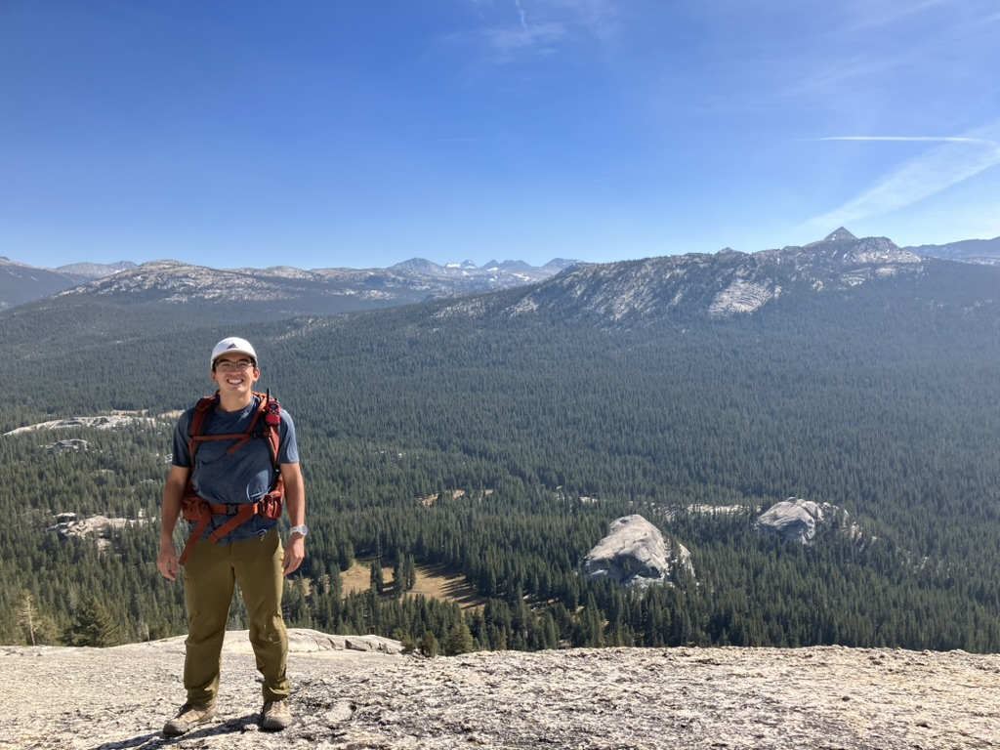

About me
I am a 1st year PhD student in the Global Rivers Group at Virginia Tech.
Past research includes work on coastal sedimentology with Tony Rodriguez and limnology and chemical oceanography with Chris Martens as an undergraduate at UNC. Present work involves using optical remote sensing to study hydrology and fluvial geomorphology.
See my research page or github to learn more!
Contact: dego@vt.edu